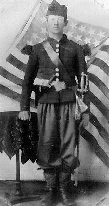

|

NAME: Orpheus Saeger Woodward
BORN: 1837
DIED: 1919
ALLEGIANCE: Union
HIGHEST RANK: Brevet Brigadier General
UNIT: 83rd Pennsylvania Infantry
RECORD: Enlisted on August 16, 1861. Elected captain
in September. Promoted to colonel in 1864. Brevetted
brigadier general in 1865.
|
|
Orpheus Saeger Woodward's Civil War service be distilled to
a single moment during the Battle of Gettysburg,
Pennsylvania. Standing atop Little Round Top, Woodward,
commander of the 83rdd Pennsylvania Infantry, looked to his
left and saw his sister regiment, the 20th Maine, beginning
to crumble under repeated Confederate attacks. What he did
next may have prevented the collapse of the entire Union
army.
Born in Waterford, Pennsylvania, Woodward enlisted in the
83rd on August 16, 1861. In September, the regiment joined
the Army of the Potomac, and Woodward was soon elected
captain of Company D. In Washington, D.C., the 83rd won an
army-wide drill competition, and each soldier received an
imported Chasseur de Vincennes uniform. At left, Woodward
poses in his prize outfit.
The following April, the army marched into Virginia, and
Woodward suffered a minor wound to his right arm on July 1
at the Battle of Malvern Hill. He recovered quickly enough
to assume command of the 83rd in September when injury and
disease forced many senior officers out of action. By June
1863, the army was pursuing the Confederate Army of Northern
Virginia northward, and Woodward found himself back in the
Keystone State.
Colonel Strong Vincent, the 83rd's brigade commander, led
his men up vacant Little Round Top, just south of
Gettysburg, on July 2. Vincent ordered Colonel Joshua
Lawrence Chamberlain's 20th Maine to the extreme left flank
and stationed Woodward's Pennsylvanians to the Mainers'
immediate right. Confederates soon charged up the slope. The
20th repulsed the attack, but successive assaults wore it
down. On the verge of being overrun, Chamberlain urgently
sought more men. Unable to spare many, Woodward instead
moved back the center of the 83rd and stretched his men out
so they were closer to the 20th.
Woodward's deft maneuver allowed Chamberlain to stretch
his own regiment farther to the left and rear, and soon the
Mainers wheeled and charged the Confederates with stunning
success. Chamberlain, often credited with saving the Union
army at Little Round Top, deflected some of the praise to
Woodward: "Captain Woodward ... on my right, gallantly
maintaining his fight, judiciously and with hearty
cooperation made his movements conform to my necessities, so
my right was at no time exposed to flank attack."
Woodward was promoted to colonel in March 1864, but a
month later he lost his right leg in the Battle of the
Wilderness, Virginia. While recovering, he was brevetted
brigadier general on March 13, 1865. Soon after the war,
Woodward moved to Neosho Falls, Kansas, where he stayed
until his death on June 26, 1919.
Source: Civil War Times Illustrated
37:4 (August 1998), 88.
|